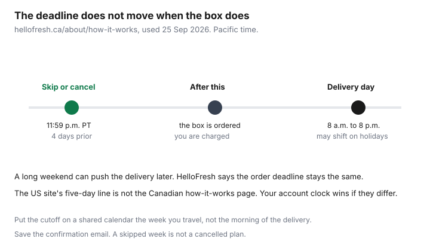

Subscriptions · Canada
How to Skip or Cancel HelloFresh in Canada Before the Weekly Deadline
HelloFresh does not need a contract to cost money. It needs a missed cutoff. The Canadian how-it-works page says you can skip or cancel, and it names the clock: 11:59 p.m. Pacific Time, four days before the scheduled delivery. A holiday can push the box to a later day. The page says the order deadline stays where it was. Travel weeks are a skip, not a story you tell the delivery driver. Full cancel is for when you are done, and it is not finished until the confirmation email is in your folder.
Whether a trial box beats a grocery shop is a different question, answered on the Food guide meal-kit trials versus groceries. A warehouse membership is the Costco framework. Grocery delivery fees, including PC Express, are the pickup and delivery comparison. This page is only the skip, the cancel, and the post-promo week. It does not re-run the trial math.
Disclosure: This guide has no natural affiliate offer. Saving Optimizer does not sell meal kits and does not claim a HelloFresh partnership. Education only. The price in your HelloFresh account, after the promotion, is the price.
Key takeaways
- hellofresh.ca/about/how-it-works, used 25 Sep 2026: skip or cancel by 11:59 p.m. PST, four days before your scheduled delivery. The US site’s five-day line is not that Canadian page.
- A long weekend or statutory holiday may push the delivery day later. HelloFresh says the order deadline does not move with it.
- Skip from the account when you are travelling and you intend to come back. Cancel when you do not. A skip is not a cancel.
- Canadian cancel steps on the HelloFresh.ca cancel page: sign in, Account Settings, manage the subscription, Cancel Plan under Status. Wait for the confirmation email.
- After the promo, the true week is the plan price plus shipping if the account shows it, plus extras, divided by meals you cook. Meals you throw out still cost money.
- A standing grocery list beats a kit when you will actually shop it. The trial-versus-groceries test stays on the Food guide.
Know the cutoff: typically 11:59 p.m. PST, 4 days before delivery
HelloFresh Canada’s how-it-works page, used 25 Sep 2026, answers the commitment question in one place. There is no lock-in. You can skip the weekly delivery or cancel at any time, and you have to do it by 11:59 p.m. PST, four days before the scheduled delivery. The same clock applies if you want to change the delivery day. The page also says deliveries run from 8 a.m. to 8 p.m. on the day you chose. Pacific time is the clock even if you live in Newfoundland. 11:59 p.m. in St. John’s is already the next calendar day in Vancouver, and it is too late. If your account shows a different cutoff than the public page, the account wins. Screenshot it. Do not average the public page with a memory of “about five days.”
The US cancel article on hellofresh.com tells American customers to pause or cancel by 11:59 p.m. PST five days prior. That sentence is easy to import into a Canadian plan because the sites look alike. The Canadian how-it-works page we read says four days. Use the Canadian page and your account. Set a phone alarm for the afternoon before the cutoff, in your own time zone, labelled with the Pacific deadline. An alarm at 11:50 p.m. Pacific is how a late shift misses it.

Skip weeks in account settings instead of full cancel when travel intervenes
A week away is a skip. Cancelling and resubscribing later throws you back onto whatever the new-customer offer is, and it is how people rejoin at the post-promo price by accident or miss a week they still wanted. The Canadian site tells you to manage the skip from the account before the cutoff. The US help names My Menu and Skip Week. On the Canadian account, open the upcoming delivery and use the skip control that account shows. If you do not see a skip button, assume you are past the cutoff for that box and that it will be charged. Skipping the following week is still available if its own cutoff has not passed.
Skip every week you will not cook, as soon as the travel dates are real. Do not wait to “see how the week feels.” The cutoff does not care how you feel on delivery morning. A skipped week leaves the plan in place. You will get the next box unless you skip that one too. Put the skips on the same shared calendar as the other renewals, with the Pacific time written on the event. If you are skipping more weeks than you are cooking, that is the cancel test in the last section, not a hobby of weekly skips.
Full cancel steps and confirmation email
HelloFresh.ca’s cancel page, used 25 Sep 2026, gives the Canadian steps. Sign in on the website. Open Account Settings. Manage the subscription, scroll to Status, and choose Cancel Plan. The page says you will receive an email confirming the cancellation. The page’s own wording says “Manager” subscription. Follow the Status and Cancel Plan labels if the menu has been tidied. The US article’s wording is close: account, Account Settings, Plan settings, Cancel Plan under Status. Either way, you are not done when you click. You are done when the email arrives and the account no longer shows an active plan with a future delivery inside the cutoff.
Cancel before the same four-day clock if you do not want the next box. HelloFresh’s how-it-works page applies that clock to cancel as well as skip. A cancel after the cutoff still stops later weeks, and it does not unwind the box already ordered. The US page says you are responsible for charges on orders already processed, and that they cannot process a cancellation after the cutoff for that delivery. Read your Canadian confirmation for the same fact. If the email names a last delivery, that box is yours to pay for and to cook or to waste. Save the email in the same folder as the subscription sheet. Then watch the card. A charge after the last delivery named in the email is a support note with the email attached, not a reason to “just skip next time.”
If several boxes are on one login, cancel each plan. A food-box page on the Canadian site says multiple subscriptions are cancelled separately. A cancelled dinner plan can leave a second plan running.
Holiday delivery shifts that keep the same deadline trap
The how-it-works page says it twice. Over long weekends or statutory holidays, the delivery day may be pushed back, and the order deadline remains the same. Christmas week, Thanksgiving, and a provincial holiday that is quiet in one province and busy in another can all move the truck. What they do not do is give you an extra day to skip. If your usual delivery is Thursday and the holiday email moves you to Friday, count four days back from the original scheduled delivery unless the email explicitly gives a new cutoff. If the email gives a new cutoff, that sentence wins, and you screenshot it. If the email only says the box will be late, assume the old Pacific deadline still applies.
The trap is the household that sees “delivery delayed” and relaxes. The order was already placed at the old cutoff. You will be charged, and you will come home to a box. Before a holiday week you will be away, skip as soon as the dates are booked, not when the delay email arrives. Delay emails are about the truck. Skip buttons are about the charge.
True weekly cost after shipping and add-ons once promos end
The homepage offer changes. “Up to 20 free meals” is a promotion for new orders, not the price of week eight. When the promotion ends, open the account and add three lines: the plan price for the week you actually received, the shipping line if one appears, and extras such as desserts, premium proteins, or add-on breakfasts. HelloFresh’s how-it-works page does not publish a single national shipping fee for us to repeat, so do not assume shipping is zero and do not assume a figure from a forum. If the account shows no shipping line, your total is plan plus extras. Divide by the number of meals you cooked and ate. Meals that went to the bin are not free. They raise the cost of the meals you did eat.
| Line in the account | Labelled example | What to do with it |
|---|---|---|
| Plan for the week | $90 | Use your number. Promos excluded. |
| Shipping, if shown | $0 on this illustration | Add it when the account shows it. Do not invent it when the account does not. |
| Extras you added | $12 | Desserts and swaps count, even if they felt small. |
| Meals cooked, out of meals paid | 3 cooked of 4 paid | $102 divided by 3 is $34 a cooked meal. Dividing by 4 and ignoring waste understates the week. |
Compare that cooked-meal figure with a normal grocery week you would have cooked anyway, using prices from your store, not from the kit’s “you saved” banner. The banner prices a recipe against a restaurant or against a made-up grocery basket. Your last receipt is the basket. The Food guide on trial weeks versus groceries is the framework for a first box. After the promo, if the cooked meal is routinely more than you will pay at the store for the same dinner, the kit is a convenience subscription. Price the convenience honestly, or skip and cancel.
When a standing grocery plan beats any meal-kit subscription
A meal kit solves “what is for dinner?” by charging you to keep the question from arriving. A standing grocery plan solves it by deciding the dinners before you shop: a short list, repeated proteins, and a backup in the freezer. If you will follow that list, the kit’s remaining value is the pre-measured bag, and you can price that value from the table above. If you will not follow a list, the kit is doing real work, and the cutoff discipline on this page is how you keep vacation weeks from doubling the bill. The kit is not required for the work. A written menu on the fridge is enough for many households, with a grocery delivery or a pickup when the store trip is the part that fails.
PC Express, Voilà, and Instacart fees belong to the delivery comparison, not to a second meal-kit subscription. A Costco membership is a different break-even, on the Costco guide. Do not add a warehouse card and a meal kit in the same month to feel organized. Pick the plan you will still be using in week eight, after the free meals are gone. If that plan is the grocery list, cancel HelloFresh before the next Pacific cutoff, keep the confirmation, and shop the list the same week so the cancel does not become takeout.
Sources & date stamps
- HelloFresh.ca, “How does HelloFresh work?”, used 25 Sep 2026: skip or cancel by 11:59 p.m. PST, four days before the scheduled delivery; the same clock to change the delivery day; delivery window 8 a.m. to 8 p.m.; on long weekends and statutory holidays the delivery day may move and the order deadline stays the same.
- HelloFresh.ca, “How to cancel your HelloFresh subscription,” used 25 Sep 2026: sign in, Account Settings, manage the subscription, Cancel Plan under Status, confirmation email. The page also points people who only need a break towards a skip.
- HelloFresh.com US cancel article: a five-day, 11:59 p.m. PST line, and My Menu then Skip Week. Cited so it is not used as the Canadian rule.
- The $90, $12, and $34 cooked-meal figures are a labelled division. They are not a HelloFresh price list. Read the post-promo week in your account.
Frequently asked questions
What is the Canadian skip deadline?
HelloFresh.ca’s how-it-works page, used 25 Sep 2026, says 11:59 p.m. PST, four days before your scheduled delivery. The US site’s five-day line is a different country. If your account shows another cutoff, the account wins.
The delivery moved because of a holiday. Did the deadline move?
HelloFresh says the delivery day may be pushed back on long weekends and statutory holidays, and the order deadline stays the same. A delay email is about the truck. Skip before the original cutoff unless the email gives a new one.
Should I skip or cancel for a vacation?
Skip if you will want boxes again after the trip, and skip every week you will be away. Cancel if you are done. A skip leaves the plan active. A cancel needs the confirmation email.
I cancelled and still got charged.
A cancel after the cutoff does not unwind a box already ordered. Read the confirmation for the last delivery. A charge after that named delivery is the one to dispute with the email attached.
Is the kit cheaper than groceries once the promo ends?
Price the week in your account: plan, shipping if it appears, and extras, divided by meals you cooked. The trial-versus-groceries framework is on the Food guide. This page does not invent a national box price.